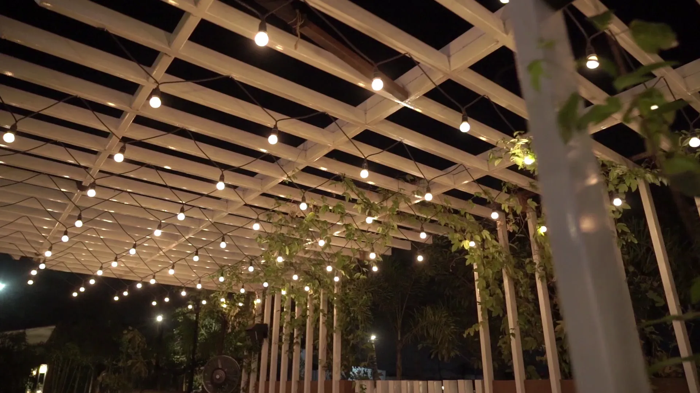

A Lighting Plan
We help you plan which walks, steps, beds, and features to light, so the work fits your goals and budget.

At Big Easy Lawn Care, we provide professional landscape and outdoor lighting in New Orleans for homes and businesses. We plan each lighting job around the local climate and soil, so paths, beds, and favorite features stay safe and easy to enjoy long after sunset.
Landscape lighting installation in New Orleans with us includes a free on-site estimate, a lighting plan matched to how you use the yard after dark, and the installation itself by a fully insured professional. We end with the system switched on and a walkthrough, so you can see every light doing its job before we hand it over.
We help you plan which walks, steps, beds, and features to light, so the work fits your goals and budget.
Fixtures are placed to guide people along walks and put the focus on the features you want seen.
We plan each lighting job around our heat, humidity, heavy Gulf rain, and local soil.
A fully insured professional handles your lighting job from the first visit to the final walkthrough.
Our lighting work is backed by the same satisfaction guarantee as every other service we offer.
Manage your service from your phone or web browser, with online payments.
Outdoor lighting at a New Orleans property can go wherever light is useful or worth seeing. We light homes and businesses, and LSU AgCenter describes lights for walks and driveways as well as for trees, statues, and fountains. Every job begins with a free, no-obligation estimate on site.

Front entries, backyards, patios, and courtyards lit for how you spend your evenings.

Storefronts, offices, and managed properties that need entrances, walks, and parking edges visible after closing.

LSU AgCenter notes path lights guide people along a walk and help drivers stay off the grass at a driveway edge.

LSU AgCenter describes spotlights aimed up at a tree from ground level, and lights that highlight statues and fountains.
Landscape lighting needs planning in New Orleans because our long summers, damp air, and downpours off the Gulf are hard on anything left outdoors. Fixtures sit in beds that take heavy rain, lawns that get mowed often, and plantings that keep growing, so placement and protection matter as much as the lights themselves.

Four landscape lighting fixtures described by LSU AgCenter suit most New Orleans yards: path lights for walks and drives, spotlights aimed at trees and features, well lights set into the ground, and step lights built into stairs. A good plan mixes them by zone instead of using one everywhere.
Walks and drives
They cast light down over a small area, guiding people along a walk and drivers along a driveway edge.
Trees and features
A narrow beam from ground level, aimed up at a tree, part of the house, a sign, or a statue.
Level with grade
Hidden in daylight and flush with the ground, so foot traffic and mowers pass right over them.
Stair risers
Set into the riser to light the tread below, which cuts down on trips on outdoor stairs.
Fixture types follow the LSU AgCenter guide to landscape lighting design. Floodlights are usually saved for security lighting and larger commercial sites.
Landscape lighting installation in New Orleans follows three steps with us. We walk the property and give you a free, no-obligation estimate; a fully insured professional installs the lighting around your beds, paths, and features; and you get a walkthrough of the working system so you know how every zone is set up.
We look at your paths, steps, beds, trees, and power, then give you a clear quote and a scope of work.
Fixtures go where the plan puts them, with the job planned around our local climate and soil.
We walk the finished lighting with you at the final walkthrough before handing it over.

The best time to add landscape lighting in New Orleans is any season the ground is workable, and ideally while beds are being built or replanted. Lighting placed during a landscape project avoids digging up new plants later, while a finished yard can still be lit with careful cable routing.
If beds are being reworked, lighting can go in alongside the new plants.
Shorter days mean lit paths and entries come into use earlier each night.
Lighting finished in spring is ready for the warm nights spent on the patio.
Lighting added in summer is ready for the evenings you spend outside.

Cost depends on how many fixtures the plan calls for, the type of fixtures, and how far cable has to run. We quote after a free, no-obligation look at the property.
Get Free EstimatesBefore adding outdoor lighting in New Orleans, decide what the light is for, which parts of the yard you use after dark, and how you want the lights switched on and off. Answering those three questions first keeps the plan focused and makes the estimate accurate from the start.
Lighting for safe footing is placed differently from lighting meant to show off a tree or a facade.
Walk the yard at night and note the dark steps, the patio, and the view from inside.
Lights work best in a yard that is kept up, so plan for lawn and yard maintenance, regular trimming, and fresh mulching around the fixtures.
Our customers mention the same things again and again: prompt, courteous crews, detailed cuts with a thorough cleanup afterward, fair pricing, and fast replies, including a callback within 24 hours on an overgrown lawn. Here is what a few of them shared with us.
The lawn care service I received from start to finish was great. The staff are always prompt and courteous, the prices can't be beat and my yard looks amazing, all thanks to Big Easy Lawn Care!
Big Easy Lawn Care is great! I called them up to take care of an overgrown lawn, and they were able to get back with me within 24 hours. Their pricing was very reasonable as well. We'll be using this company from now on for our lawn care needs.
The guys at Big Easy Lawn Care did an excellent job. They did a very detailed cut and cleaned up thoroughly after. I am so happy with the results! My lawn looks better than ever before, thanks to them!
Landscape lighting in New Orleans works best alongside our other landscaping services: landscape building for a new yard, restoration for a tired one, irrigation and drainage to manage water around the fixtures, and garden bed installation that gives your lights something worth showing off.
Landscape lighting is outdoor lighting placed in a yard to light paths, steps, plants, and structures after dark. It serves safety, security, and looks. In New Orleans, a good system is also planned around heat, humidity, and heavy rain, so fixtures and cable hold up in beds that see a lot of water.
Landscape lighting cost depends on how many fixtures the plan needs, the type of fixtures and bulbs, and how far cable has to run from the power source. A few path lights cost far less than a full yard plan. The most accurate number comes from a free, no-obligation estimate at the property.
LSU AgCenter says most landscape fixtures found at homes operate at 12 volts, while a typical home electrical system runs at 120 volts. Low-voltage lighting is easier to move and adjust and costs less than 120-volt lighting, which is more common on commercial sites that need extensive security lighting.
Place landscape lighting where people walk and where the yard has something worth seeing. Path lights belong along walks and driveway edges, step lights on outdoor stairs, and spotlights at the base of a tree or feature. A path light set in a bed beside one plant can highlight it without lighting everything around it.
On a house, light the entry, the steps, and one or two architectural features rather than the whole facade. LSU AgCenter notes that a spotlight at ground level can highlight part of the house, while a downlight mounted high, such as on a building corner, gives a soft, moonlike glow over one area.
Design landscape lighting by walking the yard at night and deciding what each light is for: safe footing, security, or showing off a feature. Then choose a fixture type for each zone, decide where power will come from, and keep fixtures where beds, mowing, and growing plants will not interfere with them.
The best landscape lighting option depends on the job. LSU AgCenter describes spotlights for trees and features, path lights for walks, well lights set flush with the ground, step lights for stairs, and floodlights for wide security coverage. Most yards use a mix of two or three types rather than one.
Start with the bulb, since it sets brightness, color, and energy use. LSU AgCenter notes that LED bulbs cost more at first but use far less energy and last longer than incandescent, halogen, or fluorescent bulbs. Then pick a fixture housing that protects the bulb and shapes the light the way you want.
Join our satisfied and happy customers. Get your free lawn care assessment today.